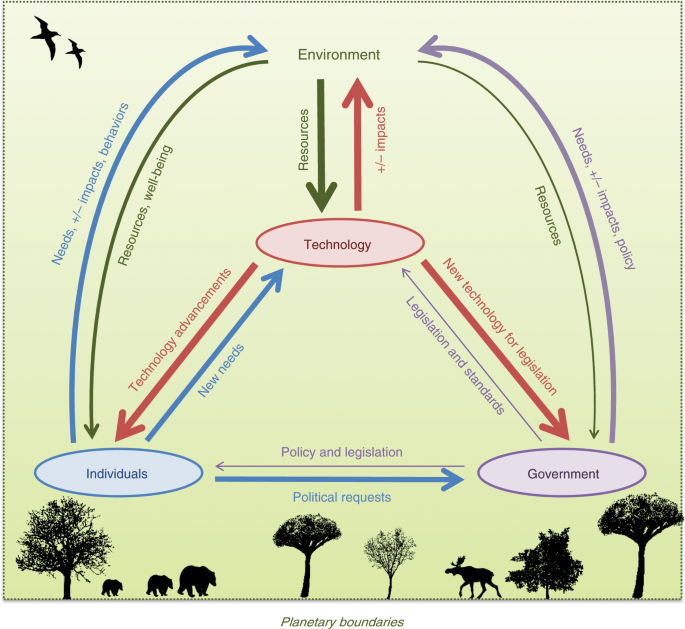

Introduction
In this epoch of technological evolution, artificial intelligence stands at the forefront, bringing forth a paradigm shift in various domains, including environmental research. This shift, however, is not without its dichotomies. AI, while being a potent instrument in environmental conservation efforts that can help address the biggest issues in the field, contributes to environmental issues as well, primarily through its significant carbon emissions. In addition to high carbon output, AI systems have a high human cost, as the technology is deeply rooted in the exploitation of human capital. Training AI models has been a revolution in the sense that it has almost broken Moore’s Law, which states that computational capacity doubles roughly every 18 months. An analysis of the OpenAI research lab found that its AI training models had been doubling in capacity every 3.4 months from 2012 to 2018.[OpenAI (2023)] This is roughly a 300,000x increase from Moore’s Law over this six year period, a shocking result that speaks to the speed and scale at which AI is being integrated, scaled and refined. However, this incredible increase in the capacity of AI comes with a price that is paid by the environment since the energy outputs from training these models are high. The aviation industry will be used as a parallel case study to demonstrate the potential transformation the field of AI could undergo. This discussion aims to delve deeper into this paradox of the benefits that AI brings to solving environmental problems while also realizing the negative environmental impact of these systems, exploring AI’s dual role in environmental research and its broader implications. Understanding and addressing AI’s environmental footprint is not just a technological imperative but a moral and ecological one that is only to get more nuanced as AI continues its sweep over modern civilization.

Paradox of AI in Environmental Research
AI’s multifaceted nature in environmental research is a blend of promise and peril. It offers groundbreaking capabilities in analyzing and predicting environmental changes, such as climate variations and pollution patterns. However, the carbon footprint associated with training sophisticated AI models is substantial, thereby contributing to the very environmental challenges it seeks to mitigate.
First, consider the promise. There are many incredible AI systems being built that aid in the advancement of carbon neutrality. The International Methane Emissions Observatory leverages AI to revolutionize approaches of monitoring and mitigating methane emissions. The platform is an open source, public database that connects methane emissions data with action on science, transparency and policy to inform the best possible data driven decision.(UNEP 2022) CO2 AI is another powerful industry player that helps corporations measure, track, simulate and optimize their emissions at scale. The company’s AI tools implement deep learning techniques and graph theory to increase the accuracy of emission measurements. (AI 2023) A third example of a company using AI to address the climate crisis is Earth Insights, a collaborative effort between Hewlett Packard and Conservation International, that uses AI to monitor biodiversity loss of tropical forests worldwide with the goal of protecting these ecosystems through science and policy initiatives. (Moussa 2023) These are only three of the many companies and initiatives that are utilizing AI to reduce the effects of the impending climate crisis through a wide array of strategies. Improvements in energy grid efficiency, vehicle carbon output, building and city emissions, industry-related efficiency improvements in design, sourcing, manufacturing, and distribution, and farming are some other examples of the benefits AI brings to the table.
In the swiftly evolving landscape of AI development, a proliferating concern has emerged regarding the environmental impact of these sophisticated systems. The University of Massachusetts Amherst conducted a pivotal study, focusing on the energy consumption and consequent carbon emissions of training Natural Language Processing (NLP) models. Their findings are stark, revealing that the carbon footprint of training a single, large language model approximates an astonishing 300,000 kg of CO2 emissions. (Strubell 2019) To put this into a more tangible perspective, consider someone driving a car or flying in an airplane. The average car, for instance, emits about 4.6 metric tons (or 4,600 kg) of carbon dioxide annually. In this context, the emissions from training one of these language models equate to the yearly emissions of nearly 65 cars. Similarly, if we consider air travel, a single flight from New York to San Francisco generates about 1 ton of CO2 per passenger. Thus, the emissions from training a large language model are roughly equivalent to 300 such flights. These comparisons shed light on the environmental footprint of AI development, underscoring the need for more sustainable practices in this rapidly advancing field. The energy required for these systems will increase as these AI systems get more powerful and robust, so this problem will only become more pressing over time unless there is a significant shift in where AI systems get their energy from. (Visuals 2015)
Quantifying the Carbon Footprint
Challenges in Measurement
The endeavor to accurately quantify AI’s carbon footprint is riddled with complexities. The muddied nature of energy consumption in data centers, coupled with the diverse methodologies used in AI operations, makes it challenging to pinpoint the exact environmental impact. Crawford and Joler’s insightful analysis sheds light on these hidden costs, revealing the extensive energy consumption behind AI’s operations. (Crawford 2018) Their work, published by the SHARE Lab SHARE Foundation and the AI Now Institute NYU, offers a profound insight into the often-overlooked environmental consequences of AI development. This intricate web of energy use, stretching from the vast data centers to the minutiae of algorithmic calculations, uncovers a distinct reality. The environmental footprint of AI is not merely a byproduct of its computational processes but a deeply embedded aspect of its very existence. As Crawford and Joler illustrate, every facet of AI, from its design to deployment, is intertwined with significant energy demands. (Crawford 2018) This revelation calls for a recalibration in our approach to AI, urging a shift towards more sustainable practices that consider the long-term ecological impacts. To make matters worse, there is a lack of incentives for companies to share data and publicly display their emissions output. The incredible pace that AI and the overarching computation industry has evolved and globalized over time has led to a few players holding the majority of the control of this infrastructure and policy adaptation.
Tools and Methods
In the face of these challenges, the field has witnessed the advent of innovative tools aimed at more accurately measuring the energy consumption and emissions of AI processes. A noteworthy contribution is the emissions calculator developed by Alexandre Lacoste and his team. This tool represents a significant stride in our ability to pragmatically estimate the carbon footprint associated with AI operations. The underlying research in creating this calculator underscores that emissions are intricately linked to several factors: the geographical location of the training server, the characteristics of the energy grid powering it, the duration of the training process, and the specific hardware utilized for the training. (Lacoste, n.d.) This issue transcends mere technological hurdles, veering into the realms of political will and consumer awareness.
There is a pressing need for increased transparency in the AI sector. Contrary to a lack of knowledge, companies are quite cognizant of the extent of training conducted on their hardware. They possess detailed insights into the computational demands of various algorithms, akin to the aviation industry’s awareness of the energy efficiency of airplanes. In aviation, there are established standards and detailed reports outlining the hardware used in planes, their flight durations, and distances. Similarly, in the AI industry, adopting such standardized reporting and transparency could lead to more informed choices and practices. It is vital to draw parallels from sectors like aviation to instill a culture of accountability and sustainability in AI development. Just as the aviation industry has evolved with a focus on energy efficiency and transparency, the AI sector too must embrace these values. This shift not only demands technological innovation but also a concerted effort from policymakers, industry leaders, and consumers to foster an environment where sustainable AI development is not just a choice but an expectation.
Impact and Implications
AI’s carbon footprint undeniably casts a long shadow over environmental ecosystems, influencing them at both granular and broader scales. This paradoxical situation, where AI’s immediate benefits in environmental research are contrasted against the more protracted environmental impacts of its carbon emissions, forms a complex ethical tableau. An example of this dichotomy is that data centers, pivotal to AI operations, are now outpacing the aviation industry in greenhouse gas emissions. (Cho 2023)
Venturing into renewable energy solutions for AI systems uncovers additional ecological concerns. Consider lithium, a critical component in the creation of rechargeable batteries. The extraction of this element is a water-intensive process; every ton of lithium extraction requires about 500,000 gallons of water.(IER 2020) This immense water consumption has profound environmental repercussions. In Chile, the world’s second-largest lithium producer, the indigenous Copiapó communities find themselves in a contentious struggle with mining companies over vital land and water rights.(Greenfield 2022) These mining activities in regions like Salar de Atacama are so water-intensive that, according to the Institute for Energy Research, they account for 65% of the area’s water usage.(IER 2020) The resultant water loss inflicts severe damage on the local ecosystems, leading to the depletion of wetlands and water sources. Such environmental degradation has far-reaching effects, endangering native flora and fauna and severely impacting the lives and livelihoods of local populations. This situation presents a nuanced challenge: while strides in AI technology are heralded for their potential to address environmental issues, their underlying infrastructure and energy sources inadvertently contribute to ecological degradation. The pursuit of technological advancement in AI, therefore, necessitates a careful consideration of its environmental trade-offs, urging a thoughtful and sustainable approach to innovation. The ethical implications of using high-carbon-footprint AI in environmental research revolve around a fundamental conflict. This conflict lies in balancing the immediate utility of AI in research endeavors against the long-term environmental costs, raising questions about the ethical responsibilities of researchers and developers.
Mitigation Practices and Future Directions
Societal Adaptation
The responsibility of steering AI towards greener practices lies significantly with how societies will adapt and unlock the powers of AI in the environmental space. Collective efforts from researchers, developers, and other civilians are essential in pioneering sustainable AI development. Furthermore, understanding the realities and consequences of climate change can allow communities to have better practices when it comes to climate awareness and outcomes by prioritizing less destructive AI sytems. These are the most critical avenues in which society can adapt AI in an environmentally-conscious manner:
Raising ecological awareness about AI’s benefits is crucial. Enhanced data collection, through citizen science initiatives, advanced sensors, and remote monitoring, enriches our understanding and application of AI in environmental contexts. This wealth of data aids in crafting more accurate and responsive solutions to ecological challenges. In high-risk areas, spreading knowledge on crisis management becomes imperative. Gathering data through surveys and community engagement can provide invaluable insights into local needs and vulnerabilities.
Developing disaster maps and emergency plans, bolstered by AI analytics, empowers communities to better safeguard themselves during crises. Proactive measures, such as timely alerts via text and email, must seamlessly integrate into our daily routines, ensuring preparedness becomes a norm rather than an exception.
Beyond immediate responses, AI’s role in enhancing societal systems is significant. Optimizing food distribution and growth, minimizing waste, and ensuring equitable access to resources are areas where AI can make a substantial difference. The public health sector also stands to gain, with AI-driven solutions potentially improving healthcare delivery and outcomes, particularly in environmentally vulnerable communities.
Crucially, AI can play a transformative role in building resilient infrastructures that are attuned to the demands of a changing climate. Implementing eco-conscious solutions like wetlands, seawalls, and stormwater ponds can significantly bolster defenses in susceptible regions. This requires a communal shift in perspective, embracing and supporting such infrastructures for their long-term benefits.
In addition, AI’s capability in detecting and addressing issues in energy grids and water systems marks a leap forward in infrastructure management. Modern systems and buildings, equipped with AI technologies, are more adept at preemptively identifying and rectifying environmental and operational challenges. Therefore, the integration of AI into our societal fabric, from data gathering to infrastructure development, heralds a new era of eco-conscious and efficient environmental management.
(BCG 2023)
Policy and Regulation
Effective policies, legal frameworks, and comprehensive governmental backing are fundamental in steering AI to be more sustainable. These elements can guide the tech industry in adopting environmentally responsible practices, thereby achieving a crucial balance between technological advancement and ecological conservation. To realize this, global cooperation and standardized AI policies, akin to international climate change agreements, are essential. Such policies can harmonize and mitigate the varying environmental impacts of AI technologies across diverse regions. Mandating transparency and reporting standards is another key step. By requiring companies to disclose their energy consumption and carbon emissions related to AI activities, we can draw on the aviation industry’s approach to transparency, underscoring the potential benefits of such practices in the realm of AI.
Tax incentives also play a vital role. Tax credits, grants, and subsidies can motivate companies, researchers, and institutions to invest in AI solutions that address environmental challenges. Moreover, a regulatory framework focused on the energy consumption of data centers and AI operations is necessary. Setting energy efficiency benchmarks and enforcing penalties for non-compliance could significantly expedite addressing AI’s environmental footprint. Public awareness is an equally important facet. Educating the public about AI’s environmental impact can shift consumer demand towards sustainable AI products and services, thus nudging the market towards greener practices. This comprehensive approach, encompassing policy, regulation, incentives, and awareness, is imperative to shape AI’s future in a way that is both technologically innovative and environmentally responsible.
Conclusion
In conclusion, as we stand at the crossroads of technological advancement and environmental preservation, the role of artificial intelligence in environmental research embodies a profound paradox. AI’s potential to address some of the most pressing environmental challenges is indisputable, yet its substantial carbon footprint and ecological implications present a legitimate counterbalance. This juxtaposition demands a concerted effort from all sectors of society – particularly policymakers, financial institutions, researchers, and the tech community – to forge a path that harmonizes technological innovation with ecological responsibility.
For policymakers, the imperative is clear: to enact comprehensive, forward-thinking legislation that not only promotes sustainable AI practices but also holds the industry accountable for its environmental impact. This involves creating regulatory frameworks that incentivize green innovation, enforce transparency in energy consumption and emissions, and support the development of environmentally friendly AI applications. Financial institutions have a pivotal role to play. By directing investments towards sustainable AI ventures and research, they can accelerate the shift towards environmentally conscious technologies. This shift not only aligns with global environmental goals but also opens avenues for sustainable economic growth and long-term profitability in the green technology sector. Researchers and the tech community are tasked with the continuous innovation of AI technologies, ensuring they align with environmental objectives. This includes improving the energy efficiency of AI models, exploring alternative, less carbon-intensive computing methods, and advancing AI applications in environmental monitoring, conservation, and sustainable resource management.
Above all, the journey towards an eco-friendly AI future is a collective one. It requires a paradigm shift in how we perceive and utilize technology – not as an end in itself but as a means to a greater goal of ecological sustainability. By integrating ethical considerations into AI development and harnessing its power to serve environmental needs, we can ensure that the AI-driven era ahead is not only technologically advanced but also environmentally conscious and sustainable. Let this be a call to action for everyone involved: to balance the scales between the immense potential of AI and the urgent need to protect and preserve our environment.
{kind=link}